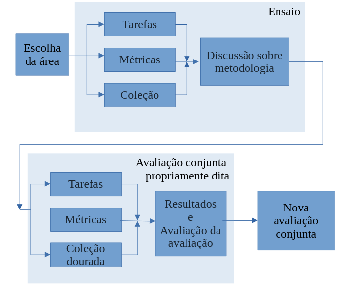

19 Avaliação conjunta em português
19.1 Apresentação
Avaliação conjunta1 foi a forma como, na década de 2000, batizamos, em português, o que em inglês estava sendo chamado de evaluation contest, evaluation campaign ou joint evaluation – e, mais tarde, shared task – uma atividade que reúne vários participantes cujos sistemas ou modelos são comparados ao executar uma tarefa comum.
Ao usar a primeira pessoa, “nós”, fazemos referência ao esforço feito pela equipe da Linguateca na época2. A Linguateca3, projeto iniciado em 2000 pelo governo de Portugal com o objetivo de dar força e visibilidade ao processamento computacional da língua portuguesa (entendida como língua internacional), desde seu surgimento teve como uma de suas missões organizar avaliações conjuntas com o objetivo de avançar a área e avaliar seu progresso. Daí as primeiras avaliações conjuntas feitas em/para a língua portuguesa terem sido organizadas pela Linguateca, que também lançou o livro Avaliação Conjunta: um novo paradigma no processamento computacional da língua portuguesa (Santos, 2007b) com contribuições da maior parte dos pesquisadores de PLN brasileiros e portugueses da época.
Vejamos um exemplo muito simplificado de uma avaliação conjunta:
Reunimos todos os interessados na área da resposta automática a perguntas. Combinamos em conjunto – organização e participantes – que tipo de perguntas usar, que tipo de respostas avaliar, e como, qual o conjunto de fontes (ou dados) em que os sistemas vão se basear, e qual o tempo entre a disponibilização das perguntas e o recebimento das respostas. A organização se responsabiliza por criar as perguntas e as (várias) respostas certas, e programas que contabilizam o desempenho dos sistemas. As respostas dos sistemas são processadas por esses programas, produzindo uma ordenação dos sistemas participantes.
Uma característica do modelo de avaliação conjunta é o enorme esforço organizacional – como veremos ao longo do capítulo – que nem sempre é possível despender, sobretudo se não houver instituições com esta função e com pessoal dedicado a estas atividades. A Linguateca tentou desempenhar esse papel, embora tivesse um pessoal e um horizonte temporal reduzidos, não comparáveis aos do NIST (agência americana para a definição e manutenção de padrões) ou da DARPA (agência americana de financiamento de investigação ligada à defesa nacional)4.
As datas mencionadas nos parágrafos anteriores podem surpreender leitoras/es mais jovens devido à antiguidade. Ao longo do capítulo, utilizamos várias referências que remontam ao século passado. Esta foi uma escolha consciente, motivada, por um lado, pela necessidade de sinalizar que boa parte dos pontos levantados já estão (ou estiveram) no radar do PLN há tempos. Por outro lado, porque, levando em conta os movimentos de idas e vindas do PLN (e da IA), é possível que o tipo de preocupação de uma época venha a ser retomado, ainda que com uma nova e mais moderna roupagem, como diria Karen Sparck-Jones em sua retrospectiva do PLN (Sparck Jones, 2001).
Às vezes, inovação nada mais é do que antigas ideias que reaparecem com novos figurinos (...). Mas os novos trajes são mais bem feitos, com materiais melhores, e também mais modernos: assim, a pesquisa não está tanto girando em círculos, mas subindo em espiral.
Por fim, ao retomar as avaliações conjuntas realizadas há tempos, bem como avaliações realizadas mais recentemente, buscamos também mostrar a quem chega no PLN de língua portuguesa que nossa língua dispõe de muitos recursos públicos e disponíveis para avaliação. Com este capítulo tentamos trazer mais visibilidade a – e fomentar a utilização de – tanto material e conhecimento já produzido na e para a nossa língua, mas que se encontra disperso por várias publicações.
19.2 Avaliação conjunta: o que é e para que serve
Em uma avaliação conjunta pretende-se, acima de tudo, duas coisas:
Estabelecer em conjunto os objetivos e os fatores de sucesso de uma dada atividade;
Fomentar o diálogo entre os diversos atores da área.
Além disso, é também possível e desejável que uma avaliação conjunta deixe como legado, como uma espécie de efeito colateral, recursos (dados, métricas, formas de avaliação etc.) que permitam a novos grupos de PLN não precisar começar do zero nessa área e que possibilitem a todos os membros da comunidade a utilização e melhoria do trabalho já feito.
Assim, uma avaliação conjunta difere de uma avaliação “não-conjunta” na dimensão colaborativa/compartilhada que pressupõe. O que se pretende é melhorar em conjunto o estado de uma determinada área, evitando reinventar a roda, aumentando o número de trocas científicas entre grupos distintos, e produzindo padrões de funcionamento que evitem, a partir dali, que grupos novos tenham que começar de novo o processo de pensar a avaliação. O objetivo final é incentivar a investigação a respeito de uma dada área ou tarefa, através da comparação de vários sistemas/modelos e com base em recursos e tarefas comuns.
Como explicam Voorhees; Tice (2000), o primeiro objetivo de uma avaliação conjunta é promover a investigação numa dada tarefa. Um segundo objetivo é investigar se a metodologia de avaliação é adequada, e se através dela é possível definir recursos de avaliação reutilizáveis, visto que “coleções de teste reutilizáveis, que permitem que os pesquisadores experimentem com ela e recebam uma resposta rápida sobre a qualidade de métodos alternativos, são fundamentais para avançar o estado da arte.” (Voorhees; Tice, 2000, p. 207). É neste sentido que podemos reconhecer o próprio design da avaliação como pesquisa.
Finalmente, é preciso notar que só se pode começar a aplicar o modelo de uma avaliação conjunta quando há mais de um grupo interessado, e mais de um sistema numa dada área. Antes disso, a única forma de avaliação possível é a autoavaliação. Esta observação espelha sobretudo uma questão de prioridades: é compreensível que não haja recursos humanos para organizar tal tarefa, se ainda há tanto que fazer em outras áreas já com sistemas a funcionar.
Anterior à popularização das avaliações conjuntas, o PLN contava com as seguintes formas de avaliação (Capítulo Avaliação de tecnologias de linguagem):
autoavaliação: algum ator (pessoa ou grupo reduzido) criava um sistema para ilustrar um método ou uma teoria e, quando muito, publicava resultados de avaliação segundo as suas próprias premissas, sem garantia de replicabilidade ou de verificação por outros grupos;
modelo empresarial: uma empresa desenvolvia um sistema para um dado negócio, provavelmente com base numa autoavaliação, e a verdadeira avaliação era feita pelos utilizadores na forma de retorno (feedback) a ser incorporada em novas e melhores versões do sistema, caso a empresa decidisse continuar o desenvolvimento.
avaliação baseada em quadros de classificação (workbenchs): apesar de estar muito em voga por causa dos grandes modelos de linguagem, é um tipo de avaliação que existe desde antes das avaliações conjuntas. No entanto, diferentemente das avaliações conjuntas, não há controle sobre o que os sistemas já sabem e/ou já treinaram, sendo relativamente fácil melhorar resultados depois de já ter visto os dados. Ou seja, diferentemente das avaliações conjuntas, não há como garantir que todos sistemas/modelos que se utilizam do workbench para avaliar estão em igualdade de condições, e que estão vendo o material pela primeira vez, o que torna os resultados artificialmente bons, sem que esse bom desempenho se reflita em outros conjuntos de dados ou em aplicações reais.
avaliação baseada em painel de especialistas: reunia-se um conjunto de especialistas que se pronunciavam individualmente sobre a qualidade de um resultado, como feito nos primórdios da tradução automática (King, 1996)
Uma limitação das duas primeiras maneiras de avaliar é que o conhecimento obtido não é reutilizável por uma comunidade científica (no sentido lato, incorporando também desenvolvedores e testadores, e não apenas pesquisadores). Muitas vezes, esse conhecimento morre nas organizações (universidades ou empresas), devido à mobilidade dos investigadores ou ao encerramento dos projetos. No melhor dos casos, mantém-se a propriedade e o conhecimento (por alguns chamada “vantagem competitiva”) no seio de um único grupo. Já na avaliação conjunta, como indicamos, é a comunidade como um todo que se beneficia e evolui, somando os esforços.
19.2.1 Características e ingredientes de uma avaliação conjunta
A seguir listamos as características principais de uma avaliação conjunta:
existência de um debate inevitável entre os participantes, buscando um consenso e levando ao conhecimento mútuo de diferentes pontos de vista e de diferentes atores com preocupações distintas;
identificação de problemas a resolver e de problemas já resolvidos;
definição de um conjunto de tarefas objetivas que os sistemas devem efetuar;
identificação de diferenças irredutíveis, e de zonas cinzentas, ambas importantes para a documentação da área e do seu progresso.
De maneira complementar, acreditamos que uma avaliação conjunta tem normalmente os seguintes ingredientes:
vários sistemas participantes;
uma organização com conhecimento do assunto e reconhecida idoneidade, a fim de garantir que todos os participantes se encontrem em igualdade de condições;
uma forma prática de produzir resultados e de compartilhá-los com os participantes e com a comunidade;
a possibilidade prática de comparar esses resultados (por outras palavras, os resultados produzidos pelos vários sistemas/modelos têm de ser minimamente comensuráveis).
Quanto ao último ponto, é importante lembrar que uma avaliação conjunta pressupõe uma aplicação num dado contexto. Considerando, por exemplo, uma avaliação de “sistemas de compreensão de texto”, estão envolvidos vários tipos de textos, um ou vários domínios fixos. Por isso, sistemas/modelos diferentes, mas igualmente “bons”, podem ser incomensuráveis, se acontecer de um deles trabalhar sobre acórdãos da Procuradoria da República, outro sobre resumos de revistas médicas e outro ainda sobre anúncios. Ou seja, pode não ser possível uma tarefa igualmente “neutra” para todos os sistemas/modelos e, ao mesmo tempo, justa para os avaliar. Há, no entanto, a possibilidade de fazer a união dos tipos de texto e problemas relevantes para cada grupo, e medir numa avaliação conjunta quanto os sistemas pioram quando aplicados a outros ambientes. A prática das avaliações conjuntas provou que a especificação, em comum, de um subconjunto de questões e respostas sobre uma mesma base permite uma reflexão sobre os problemas concretos, a forma de avaliação, e as vantagens e desvantagens de diferentes opções, sendo incomparavelmente mais rica do que uma argumentação teórica sobre um conjunto de princípios independentes da aplicação.
Por fim, as seguintes condições são altamente desejáveis:
- os participantes se reúnam em um ou vários encontros, presenciais ou virtuais, para que a troca de ideias e a consequente fertilização cruzada possa acontecer da melhor maneira.
- as agências de financiamento considerem os resultados e a participação nestas avaliações não apenas como índice do grau de maturidade da área, mas também (e principalmente?) como uma atividade que devem absolutamente financiar.
O primeiro item é importante porque a documentação publicada online nem sempre é submetida a um escrutínio cuidadoso por parte dos participantes, e é preferível uma exposição oral que permita esclarecer dúvidas imediatamente. O debate entre os participantes e a organização é uma etapa essencial da preparação das avaliações conjuntas, que garante que todas as opções sejam entendidas e aceitas e evita que os sistemas participem com outro modelo conceitual que não o subjacente à própria avaliação conjunta em questão. No entanto, vemos que isso nem sempre é possível, sobretudo quando as avaliações já estão incorporadas em uma infraestrutura maior, como foi o caso do CLEF (Seção CLEF: Recuperação de Informação e QA (2003-2009)) ou do IberlEF (Seção IberLEF 2019: reconhecimento de entidades e de relações).
Do mesmo modo, também é útil estabelecer uma discussão após a própria participação, para reconhecer o que correu bem e o que poderia ser melhorado, e para reforçar a ideia de que uma avaliação conjunta não deve ser considerada como um acontecimento isolado, mas sim como um elo na cadeia de progresso de uma área, muito provavelmente levando a outras edições com um aumento gradual dos desafios oferecidos aos sistemas participantes.
Quanto ao segundo item, reconhecemos que se trata sobretudo de um desejo, e que em geral temos pouca influência sobre isso.
Idealmente, uma avaliação conjunta tem várias edições, como ilustrado na Figura 19.1. Além disso, para ajudar a fixar os parâmetros, pelo menos nas edições iniciais, costuma-se usar um ensaio (trial ou dry-run, em inglês). Isto significa que uma avaliação conjunta é sempre um acontecimento que decorre num período de tempo alargado.

Fonte: Adaptada de Santos (2007a, Fig 1-1)
19.3 Por que participar de uma avaliação conjunta
Ao participar da delimitação de um problema e da discussão relativa às melhores maneiras de aferição desse problema, passa-se, mais tarde, a ter um ambiente que permite separar o desenvolvimento de um sistema (a cargo do grupo) do teste de hipóteses (que é fornecido e gerido por uma organização externa).
Além disso, a existência de prazos externos, o conhecimento dos resultados de outros sistemas, e a facilidade de comparação e acesso ao estado da arte e ao resultado mínimo garantido (baseline)5, são outros motivos que tornam a participação em avaliações conjuntas uma experiência valiosa.
É também preciso sublinhar que a existência de uma comunidade de pessoas que se reconhecem num mesmo objetivo e com as quais é possível discutir ideias e observar as consequências de opções diferentes, levando a uma fertilização cruzada e a um reconhecimento público, é extremamente importante para transformar uma atividade (neste caso, o processamento computacional da língua portuguesa) numa área científica respeitada e com visibilidade.
Para que uma avaliação conjunta possa conseguir isto, é no entanto preciso que se baseie em procedimentos rigorosos e consensuais, que abordaremos na próxima seção.
19.4 Como implementar uma avaliação conjunta
19.4.1 Cartografia do problema e da tarefa
Uma questão pertinente, mas que frequentemente passa despercebida, é a própria possibilidade de medir o problema, antes mesmo de avaliar o desempenho na solução.
Sem sabermos a dificuldade (ou entropia, ou perplexidade) de uma dada tarefa, uma avaliação não pode ser útil, e os números são não-interpretáveis. Outra observação extremamente relevante diz respeito à língua e à possibilidade de comparação com outras línguas. Uma tarefa resolvida para uma língua pode ainda não estar resolvida para o português. Ou, ainda, nem todas as tarefas precisam ser relevantes para todas as línguas. A explicitação de sujeitos omitidos (sujeitos ocultos), pode ser um desafio para a língua portuguesa, mas certamente não o é para a língua inglesa, por exemplo.
A comparação com outras línguas é muitas vezes uma preocupação de pesquisadores e proponentes de avaliações6, mas pode ter como consequência a desvalorização da originalidade na elaboração dos recursos ou de medidas de avaliação. Na nossa opinião, o importante é tentar medir o problema e a solução na língua portuguesa, em primeiro lugar.
É fundamental, ao organizar uma avaliação conjunta, definir uma tarefa o mais possível neutra e compreensível por pessoas, mesmo que não seja necessariamente de utilidade para o utilizador final. Ou seja, tem de estar clara e bem definida, e poder ser compreendida (e repetida) por um conjunto de pessoas diferentes.
Por outro lado, a avaliação de uma tarefa bem definida não tem de ser unívoca, no sentido de comparar cegamente com um conjunto de soluções únicas. Na criação de resumos ou na avaliação de tradução, por exemplo, se, por um lado, é possível avaliar, por outro lado, não é possível definir uma solução única.
19.4.2 Criação dos recursos
Na prática, há duas formas de organizar uma avaliação conjunta:
criar um recurso padrão-ouro, feito total ou parcialmente (por meio da revisão de algum resultado automático) por pessoas desempenhando a tarefa que será feita pelo sistema ao longo da avaliação; ou usar para tal um recurso já criado anteriormente.
confiar de algum modo na qualidade dos sistemas participantes, cuja soma de resultados, ordenados, leva a um conjunto de respostas (chamado monte ou “pool”), que serão posteriormente “apenas” avaliadas pela organização, de modo a constituir um recurso de avaliação criado a posteriori 7. (Para discussão das formas e consequências desta forma de criação de recursos, ver Zobel (1998) e Braschler; Peters (2003).)
19.4.2.1 Possibilidade de reuso
Uma questão associada à criação de recursos é a possibilidade de reutilização destes. Este é um ponto delicado, relacionado aos pressupostos teóricos de uma avaliação (conjunta ou não), mas, como também se aplica a avaliações conjuntas (que implicam em geral mais trabalho na criação dos recursos), merece ser discutido aqui: recursos criados com uma dada abordagem teórica não podem ser simplesmente transpostos para outra abordagem, sob perigo de prejudicar gravemente os sistemas avaliados.
Para dar um exemplo concreto: os lugares no HAREM (Seção Primeiro e Segundo HAREM: avaliação de entidades, relações e expressões temporais (2005 e 2007-2008)) eram apenas aqueles que seriam interpretados como lugares por um leitor, não entidades que representassem um país ou uma cidade como organizações ou grupos de pessoas. Se se transferissem os recursos do HAREM para uma avaliação como foi feita no CoNLL (Sang, 2002) ou no ACE (Doddington et al., 2004) para o inglês, em que entidades geopolíticas deveriam ser classificadas como lugares, ter-se-ia de reclassificar todos esses casos, sob pena de prejudicar os sistemas que concorriam com esses pressupostos. Veja-se Santos (2007c) para uma discussão detalhada das diferentes filosofias de avaliação de reconhecimento de entidades mencionadas.
Concluindo, não há recursos neutros e, portanto, embora indiquemos a reutilização sempre que possível do muito trabalho que já foi feito, resumido na Seção Resumo das avaliações conjuntas, é preciso sempre compreender o contexto e a definição da tarefa subjacente.
Para isso, nunca é demais insistir numa documentação detalhadas das opções tomadas, para que o reuso possa ser feito de maneira informada e consciente.
19.4.3 Medidas de avaliação
As medidas por que se pauta uma avaliação conjunta são a sua pedra de toque. Ver também a Seção Métricas: Medindo a performance.
Conforme já referido, medir só faz sentido se a medida for adequada, isto é, se os valores numéricos apresentarem uma relação forte com as qualidades que se pretende aferir. A relação entre as diferenças nas medidas e a importância ou interesse dos casos resolvidos, ou não resolvidos, pelos sistemas é também pertinente: Voorhees; Tice (2000) notam que nem todos os casos são iguais, e que não se faz justiça a um sistema se o mesmo peso é dado às respostas fáceis e às difíceis. Assim, os casos de discordância entre os juízes humanos e o “gabarito” automático que implementaram acabam por ser, precisamente, aqueles em que a resposta é mais complicada, e portanto quando é mais necessário ter um julgamento humano.
Destacamos, todavia, que as questões aqui referidas, embora extremamente pertinentes, só podem ser colocadas – e discutidas – depois de, idealmente, pelo menos uma avaliação conjunta ter ocorrido, para que os dados possam ser trabalhados e as condições da avaliação conjunta avaliadas e melhoradas. Antes disso, contudo, é preciso definir que problema(s) atacar, e como caracterizá-lo(s).
19.5 Como avaliar uma avaliação conjunta
Sugerimos que, de um modo geral, uma avaliação conjunta poderá ser avaliada
através da participação que suscitou e da adesão que teve;
através do material (ferramentas, recursos e publicações) a que deu origem;
através do impacto que teve nos grupos participantes e na área em geral;
através da reutilização (ou não) dos recursos nela ou por ela criados;
através do impacto que esse acontecimento teve no panorama científico nacional ou internacional.
Em uma escala de tempo mais alargada, o verdadeiro impacto irá se refletir na constatação de que dali por diante as pessoas passaram a usar os recursos e os conhecimentos produzidos na avaliação conjunta para identificarem os problemas que os seus sistemas/modelos vão ter que resolver, medirem o desempenho dos ditos, e melhorarem o estado global da área em causa.
19.5.1 Críticas e limitações
É preciso, no entanto, esclarecer que há críticas válidas a esta forma de avaliação, ou que o seu abuso pode levar a alguns inconvenientes.
Por um lado, há o perigo de os participantes desenvolverem os seus sistemas para participar nas competições e não para funcionar na vida real. Isto tanto pode acontecer pela concentração numa área específica, como considerando cuidadosamente as questões medidas por uma dada avaliação conjunta e desprezando as que não são objeto de comparação.
Por outro lado, a existência dos chamados “cotovelos”, que indicam que se chegou a uma fase em que a maior parte dos sistemas já têm um desempenho aceitável, sinaliza que pode ser hora de mudar radicalmente o cenário da avaliação. Hirschman (1998), ao descrever o MUC8, comenta que, de fato, de uma edição para a próxima, deve-se sempre aumentar os desafios e evoluir na avaliação; Gaizauskas (2003) sugere que o estudo de avaliações anteriores sugere novas métricas que, em si, sugerem novos tipos de avaliação... ou seja, uma atividade de avaliação conjunta deve progredir ao longo das várias edições, aprendendo com o passado e com os erros e sucessos dos sistemas/modelos participantes.
Hirschman também chama nossa atenção para quais partes interessadas estão envolvidas em uma avaliação específica: o setor, os usuários, os pesquisadores ou os financiadores? As avaliações até agora organizadas para o português privilegiaram a qualidade e os métodos, mas não a eficiência ou o preço, e muito menos a sustentabilidade do ponto de vista de uma agência de financiamento.
O principal perigo de uma avaliação conjunta talvez seja, contudo, que as medidas ou o cenário não sejam adequadas ao problema ou privilegiem um certo tipo de funcionamento. Um exemplo seria limitar a priori, em uma tarefa de resposta automática a perguntas (RAP, QA), o tamanho da resposta em bytes ou tokens9. Afinal, que significado pode ter o tamanho de uma resposta?
De modo análogo, é importante verificar a relação (e relevância) da tarefa para a aplicação a que está subjacente, sob pena de a avaliação não ser válida. Por exemplo, é justificável definir desambiguação de sentidos como uma tarefa separada do processamento computacional de uma língua? Wilks (2000) critica a própria pertinência de avaliar separadamente esta tarefa, como foi feito no Senseval10, na esteira do que já Kilgarriff (1997) tinha argumentado.
Outra objeção é a de que as avaliações conjuntas reduzem o valor de um sistema/modelo a um número, ou a uma série de números, não necessariamente facilmente interpretáveis, compreensíveis ou mesmo intuitivamente adequados.
As medidas têm de ser intuitivamente interpretáveis para todo o processo fazer sentido. Contudo, nem sempre é fácil eleger uma medida quando há muitas variáveis que é preciso considerar. A este respeito, mencione-se que avaliações conjuntas (canônicas) como o TREC11 e o CLEF (descrito na Seção CLEF: Recuperação de Informação e QA (2003-2009)) usam mais de uma dezena de medidas, e em avaliações para o português como o HAREM e o Págico, usamos também mais do que uma.
Do mesmo modo, é muito importante compreender a junção dos resultados, quase nunca simples. Tome-se o seguinte exemplo: num campeonato por equipes, temos um conjunto de cinco alunos com nota 1 em uma dada disciplina, e uma outra equipe com uma aluna com nota de 5 mais quatro alunos com nota 0. Embora cumulativamente ambas as equipes atinjam o mesmo valor se a medida for “soma das notas” (5) ou “média das notas” (1), as duas equipes – ou os dois sistemas – estão longe de ser semelhantes.
Nas avaliações conjuntas é importante que a tarefa escolhida – o conjunto de tópicos, o conjunto de perguntas – seja suficientemente variada e representativa para que possam de fato avaliar um sistema. A questão de garantir um número suficiente de perguntas e de confirmar se as diferenças entre sistemas são estatisticamente significativas foram tratadas por exemplo por Buckley; Voorhees (2000) para o TREC, por Chinchor (1992) para o MUC e por Voorhees; Tice (2000) para respostas a perguntas no TREC. Para o português e para o HAREM, ver Cardoso (2006). Ver também a Subseção Testes de Significância Estatística.
Ainda uma última crítica – que embora pertinente, não invalida o modelo de avaliação conjunta –, é que as avaliações conjuntas em geral não consideram a “experiência do utilizador”, nem outras qualidades “periféricas” (ou mais dificilmente mensuráveis), tais como qualidade científica, qualidade da documentação, forma de apoio ao utilizador ou maneira como recuperam de erros, inovação, consistência, facilidade de manutenção, legibilidade do código etc.
Esta observação só indica que a aferição do valor e da utilidade de um sistema/modelo não se esgota com uma avaliação conjunta: outros tipos de avaliação podem também ser necessários. Contudo, em alguns casos, pode se juntar a uma avaliação conjunta um painel de especialistas que pontuam algumas destas propriedades (como nas Morpholympics (Hausser, 1996) organizadas por Hausser em 1994), assim como se podem idealizar avaliações conjuntas com um perfil claro de utilizadores em mente.
Passamos agora à apresentação das avaliações conjuntas para a língua portuguesa que organizamos ou conhecemos, utilizando um recorte estritamente temporal.
19.6 Morfolimpíadas: análise morfológica (2003-2004)
A primeira tarefa para a qual organizamos uma avaliação conjunta foi a análise morfológica. As Morfolimpíadas foram motivadas pelo fato de a língua portuguesa ter um paradigma flexional rico, ao mesmo tempo que, na época, havia um número razoável de grupos que tinham algum tipo de processamento morfológico em seus sistemas.
Os participantes receberam os materiais de teste (613 textos) em três formatos: texto corrido, uma unidade (“token”) por linha, e lista de tipos. Incluímos, nesses textos ou listas, os itens de nossa lista padrão-ouro12: 200 formas que, por sua vez, correspondiam a 345 análises diferentes. Os sistemas participantes deveriam então retornar todos os três materiais de teste morfologicamente analisados, sem saber quais palavras seriam avaliadas.
Embora a análise morfológica pareça uma tarefa simples, para produzir uma comparação justa de sistemas com objetivos muito diferentes foi preciso elaborar resultados de acordo com três eixos:
análise morfológica propriamente dita
verificação ortográfica
radicalização13
Além disso, talvez o resultado mais interessante das Morfolimpíadas tenha sido a constatação de que havia – e pensamos que ainda há – uma considerável discordância teórica sobre a forma adequada de fazer a análise morfológica do português, conforme descrito em Santos et al. (2003).
E, de maneira complementar, podemos dizer que as Morfolimpíadas levaram a um grande aprendizado sobre como avaliar, cooperativamente, uma determinada aplicação.
Todos os resultados, dados e programas (em Perl) usados para organizar as Morfolimpíadas foram divulgados na página da Linguateca dedicada a esta avaliação - onde ainda podem ser encontrados14.
19.7 Primeiro e Segundo HAREM: avaliação de entidades, relações e expressões temporais (2005 e 2007-2008)
O HAREM é um exemplo paradigmático de uma avaliação conjunta que condiz com a maior parte das afirmações genéricas feitas no presente capítulo.
19.7.1 Reconhecimento de entidades mencionadas
HAREM é a sigla (recursiva) de “HAREM - Avaliação de Reconhecimento de Entidades Mencionadas”. A tarefa ainda não havia sido tentada por nenhum sistema para a língua portuguesa, portanto, esse foi um caso claro de tentativa de alavancar uma área desconhecida para o português. Conforme indicado na página de motivação do Primeiro HAREM, o reconhecimento de entidades mencionadas (REM, ou NER, em inglês)15 era uma tarefa “leve” em termos de carga teórica (com isso queremos dizer que não havia campos diferentes com posições irredutíveis entre os interessados, diferentemente do que pode ser dito sobre a análise sintática, por exemplo)16.
Após um debate extenso e uma experiência de anotação preliminar de textos, que levou à fixação da terminologia e à escolha de quais problemas resolver, resultando em extensas diretivas de anotação, foi criada a Coleção Dourada (recurso padrão-ouro) do Primeiro HAREM, tomando especial cuidado na formalização de várias alternativas possíveis e na definição das tarefas que seriam comparadas entre os sistemas.
Após a avaliação propriamente dita, que incluiu a criação de uma arquitetura de avaliação, os recursos coleção dourada e programas de processamento dos resultados foram tornados públicos.
Todo o processo permitiu medir o estado do reconhecimento de entidades para o português, ao mesmo tempo que se identificaram questões ainda não resolvidas e se produziram estudos e observações – a nível da arquitetura, das métricas, e da influência do gênero textual– cujo interesse extravasa o simples processamento computacional da nossa língua.
Diferentemente de outras avaliações de NER internacionais, como o MUC e o ACE, no HAREM (i) utilizamos um conjunto de classes variado, derivado de uma leitura preliminar de textos de gêneros variados (e que, portanto, continham entidades de natureza semântica variada), e (ii) oferecemos às equipes participantes a possibilidade de escolher em quais classes de entidades gostariam de competir. Ou seja, os sistemas poderiam escolher em quais classificações gostariam de ser avaliados, por exemplo, apenas LOCAL ou PESSOAS, ou TEMPO – o que obrigou a organização a desenvolver medidas de avaliação específicas, ver Seco et al. (2006).
Além disso, uma característica importante de ambas as edições do HAREM (e que também difere do MUC e do ACE), é a possibilidade de uma mesma entidade seja classificada, em contexto, de mais de uma maneira. Assim, em uma frase como
Eu gosto muito do Brasil
“Brasil” pode estar fazendo referência a um LOCAL; ou aos moradores do local ou à equipa braileira (classe PESSOA), ou, ainda, à organização política/Estado (classe ORGANIZAÇÂO). Se mais do que uma interpretação fosse válida no contexto em que ocorre, todas deveriam estar marcadas.
Essas escolhas, por sua vez, se permitiram uma fotografia rica do que era possível em REM em português, tiveram como consequência a impossibilidade de comparação direta com os resultados de avaliações para outras línguas.
O Segundo HAREM (2006-2008) teve como principal diferença com relação ao primeiro a existência de três subtarefas, propostas pela comunidade (duas tarefas novas, além do HAREM “clássico”):
tarefa de identificação temporal (Baptista et al., 2008; Hagège et al., 2009), organizada pelo grupo proponente, ficando a equipe da Linguateca a cargo da anotação e criação do recurso padrão-ouro e da avaliação.
ReRelEM, tarefa de identificação de relações semânticas entre as entidades do HAREM (Freitas et al., 2008, 2009), completamente a cargo da equipe da Linguateca.
A Figura 19.2 apresenta as classes e subclasses utilizadas no Segundo HAREM, na tarefa “clássica”.

19.7.2 Identificação, classificação e normalização de expressões temporais
Esta tarefa, chamada informalmente do TEMPO, ou de reconhecimento de entidades temporais, foi idealizada por um grupo participante (Baptista et al., 2008) inspirada em avaliações de referência temporal para o inglês, nomeadamente o TempEval (Verhagen et al., 2010), e a proposta de anotação TimeML (Saurı́ et al., 2006).
É preciso explicar que a tarefa expandia a anotação já existente no Primeiro HAREM (e que tinha tipo e subtipo), definindo mais atributos, que foram chamados atributos estendidos, a saber: sentido, tempo-ref, val-delta e val-norm.
Como relatado em Mota et al. (2008), um subconjunto da coleção dourada do HAREM foi anotado com esta referência temporal mais fina, assim como programas específicos para a avaliar foram desenvolvidos e depois disponibilizados.
Esta tarefa teve sete participantes, embora nem todos tentassem resolver os mesmos problemas (apenas dois tentaram obter a referência temporal e um o sentido e a normalização).
19.7.3 ReRelEM - relações entre entidades
O objetivo do ReReLEM era identificar um conjunto de relações entre as entidades do HAREM. A organização escolheu – após uma análise minuciosa do material textual – as quatro relações a seguir: IDENTIDADE, INCLUSÃO, LOCALIZAÇÃO e OUTRO.
Uma entidade específica pode obviamente estar relacionada a várias outras, como no Exemplo 19.1, que representa a informação de que a EM b13 está relacionada a b3 e b5 pela relação de identidade, e a b11 pela relação de ocorrência.
Exemplo 19.1
depois de partir em vantagem pontual no
<EM ID="b13" CATEG="ACONTECIMENTO" TIPO="ORGANIZADO" COREL="b3 b5 b11" TIPOREL="ident ident ocorre_em">Campeonato do Mundo</EM>
Como é exatamente a mesma coisa dizer que A ocorre em B, ou que B é a localização de A, e se A é idêntico a B e B inclui C, então A também inclui C, e assim por diante, desenvolvemos um conjunto de regras para que todas as relações logicamente válidas possíveis fossem preenchidas automaticamente, inspiradas em Vilain et al. (1995) no MUC.
A coleção padrão-ouro do ReRelEM (um subconjunto da coleção padrão-ouro do HAREM), continha 12 textos e 573 entidades mencionadas. Após a expansão automática, a coleção continha 6.477 relações.
Todo o material das duas edições do HAREM, incluindo programas de avaliação e corpora anotados, estão disponíveis17.
19.8 CLEF: Recuperação de Informação e QA (2003-2009)
Em 2003, a Linguateca começou a colaborar com o CLEF (acrônimo de Cross-lingual Evaluation Forum), um fórum de avaliação multilíngue. Do ponto de vista da língua portuguesa, tomar parte em uma avaliação conjunta com um grande público e muita experiência parecia uma boa ideia, especialmente em tarefas nas quais a Linguateca não tinha nenhuma experiência, como recuperação de informações (RI) e resposta automática a perguntas (RAP, QA). Além disso, o bônus adicional de conseguir participantes não lusófonos para tarefas multilíngues parecia uma maneira de colocar o português no mapa.
Por isso, a Linguateca fez parte da organização do CLEF de 2003 a 2009, e gradualmente, passou para a organização de tarefas mais inovadoras, como o GeoCLEF, o GikiP e o GikiCLEF, além de ajudar no ImageCLEF, no WebCLEF, no ResPubliQA e no LogCLEF.
Ao contrário do que se poderia esperar, contudo, sempre houve menos participantes de processamento em português no CLEF do que no HAREM.
19.8.1 CLEF clássico
A tarefa mais clássica do CLEF é uma tarefa padrão de recuperação de informações em um ambiente multilíngue. Dada uma coleção de documentos e um conjunto de tópicos, os sistemas participantes devem fornecer um conjunto classificado de documentos sobre o tópico. Seja de forma monolíngue (pesquisando tópicos expressos em português em uma coleção de documentos em português) ou multilíngue (por exemplo, pesquisando tópicos expressos em francês em uma coleção em português, ou vice-versa), ou de forma multilíngue em todas as coleções.
Adicionar o português significou, na prática, três questões, discutidas detalhadamente em Santos; Rocha (2003), Rocha; Santos (2007):
disponibilizar uma coleção de textos – a coleção CHAVE –, com textos completos de dois jornais principais, um de Portugal e outro do Brasil, de 1994 e 1995.
criar tópicos apropriados para a coleção, bem como para consultas multilíngues. Por exemplo, nos esforçamos por obter tópicos sobre países lusófonos que também estivessem presentes em coleções de outros idiomas e para encontrar, por exemplo, temas finlandeses que ocorressem na coleção portuguesa e também na finlandesa. (Esses tópicos também precisaram ser traduzidos para o inglês, e nós precisamos traduzir os tópicos de outros idiomas para o português.)
avaliar os resultados na coleção em português, pois vários documentos de cada tópico tiveram que ser marcados como relevantes ou irrelevantes. Para se ter uma ideia do tamanho, em 2004 foram avaliados 22.311 documentos, com uma média de 446 documentos por tópico.
Após a realização da avaliação, tornamos públicos os tópicos e seus julgamentos binários na coleção CHAVE18, para que os sistemas pudessem usá-los para treinamento.
19.8.2 Resposta automática a perguntas (QA@CLEF)
A tarefa de resposta a perguntas19 seguiu uma configuração de avaliação semelhante na mesma coleção, mas em vez de tópicos, foram criadas perguntas (classificadas pelo tipo de resposta esperada) e, em vez de documentos relevantes, foram avaliadas respostas específicas. Antes de sugerir uma pergunta, tivemos que verificar se a resposta poderia ser encontrada na coleção, de preferência em mais de um documento, para que a pergunta pudesse ser usada no QA@CLEF. Todas as respostas a uma determinada pergunta foram agrupadas e disponibilizadas junto com a coleção CHAVE.
Como resultado da organização da trilha20 QA de 2003 a 2008 (correspondente aos anos de 2004, 2005, 2006, 2007 e 2008), foram criadas e disponibilizadas 4380 perguntas em português, juntamente com suas respostas na coleção CHAVE. (Deve-se observar que as perguntas foram coletadas coletivamente por todos os organizadores, uma vez que QA era tanto monolíngue quanto multilíngue. Essa é a razão pela qual nem todas as perguntas têm respostas na coleção CHAVE, que é em português – elas têm respostas em outras coleções, por exemplo, na italiana.)
É importante relatar que, embora essa tenha sido a configuração no início, a tarefa de QA foi aprimorada e enriquecida de uma edição para a outra, e quem se interessar por QA multilíngue no CLEF pode ler todos os documentos de visão geral, também porque havia várias subtarefas. Aqui, comentamos apenas algumas aspectos relevantes para a parte em português.
Por exemplo, a partir de 2006, além de fornecer uma resposta, era necessário fornecer uma justificativa para ela usando a coleção, para evitar que os sistemas soubessem a resposta de outras fontes, como a Internet ou suas próprias bases de conhecimento. Isso levou a uma classificação quíntupla das respostas: corretas (e justificadas), inexatas, não justificadas, erradas e ausentes (Magnini et al., 2007).
Além disso, as perguntas foram criadas em grupos sobre um tópico, aceitando, por exemplo, correferência entre elas, em vez de apenas perguntas independentes (Giampiccolo et al., 2008).
Por fim, foram adicionadas perguntas de lista, ou seja, perguntas que exigiam uma lista fechada ou aberta como resposta, bem como perguntas temporalmente restritas.
Os recursos para o português do QA@CLEF estão disponíveis na coleção CHAVE21.
19.8.3 GeoCLEF
O principal objetivo do GeoCLEF (Gey et al., 2007) era desenvolver e avaliar a recuperação de informações geográficas. A ideia era criar tópicos que exigissem conhecimento geográfico e, portanto, raciocínio. Dois exemplos de tópicos são
Cidades em um raio de 100 km de Frankfurt
Malária nos trópicos
que ilustram, respectivamente, regiões delimitadas com precisão e regiões vagas.
Os recursos para o português do QA@CLEF estão também disponíveis na coleção CHAVE22.
19.8.4 GikiP: Informação geográfica (2008)
O GikiP (Santos et al., 2009) foi uma tarefa piloto do GeoCLEF em 2008. O nome da tarefa inclui G para geográfico, iki para Wikipedia e P para piloto.
Usando as coleções da Wikipédia já disponíveis para a trilha de QA (em português, alemão e inglês), a tarefa era responder a perguntas/solicitações de informações que exigissem algum tipo de raciocínio geográfico, fornecendo uma lista de páginas da Wikipédia como resposta. Isso significava uma espécie de híbrido entre RAP (QA) e IR.
Uma das motivações para usar a Wikipédia em um contexto multilíngue foi o fato de a Wikipédia ser uma mistura interessante de corpora comparáveis e de tradução, considerando os vínculos linguísticos entre diferentes idiomas.
Apenas três sistemas participaram, e todos os tópicos e respostas estão disponíveis na página do GikiP23.
19.8.5 GikiCLEF
O GikiCLEF (Santos et al., 2010) englobou 9 línguas (e 10 wikipédias) e recebeu 17 corridas (runs) de 8 participantes, dos quais um do Brasil e outro de Portugal. Foram preparados 50 tópicos (em 10 “línguas”24), e os sistemas precisavam fornecer os IDs das páginas da Wikipédia, além de uma justificativa.
Os tópicos foram escolhidos de modo a refletir aspectos culturais, para que não houvesse uma resposta semelhante em todos os idiomas. Mas, como discutido em Santos; Cabral (2010), isso teve a consequência perversa de que, para qualquer tópico, havia mais respostas em inglês e, como os 50 tópicos cobriam culturas e temas muito diferentes, era difícil fazer generalizações estatísticas. De qualquer forma, o GikiCLEF produziu 1.009 respostas em um conjunto de 10 wikipédias, disponibilizadas no pacote GIRA25.
Das avaliações organizadas pela Linguateca, esta foi sem dúvida a que exigiu mais esforço. Mas, no que diz respeito à língua portuguesa, ela quase não se materializou em progresso: conforme relatado em Santos; Cabral (2010, p. 219), havia apenas um tópico com tema lusófono: “Estados litorâneos brasileiros”. No entanto, é possível rastrear sua influência na próxima avaliação conjunta organizada pela Linguateca, o Págico, em que voltamos a ter desafios somente em português e adicionamos os seres humanos ao circuito, ou melhor, desenvolvemos uma avaliação em que os humanos também podiam competir.
19.9 Págico: RI complexa sobre culturas de língua portuguesa (2012)
O Págico (Mota et al., 2012) foi uma avaliação conjunta na área de recuperação de informação em português cujo objetivo era avaliar sistemas capazes de encontrar respostas não triviais a necessidades de informação complexas, em língua portuguesa. A ideia inicial, no Págico, era, usando perguntas relacionadas à cultura dos países lusófonos, tornar a avaliação também relevante para a participação humana - por exemplo, estudantes de português como língua estrangeira ou pesquisadores da cultura portuguesa e brasileira. Hoje, podemos pensar no Págico como um precursor de conjuntos de dados (datasets) que comparam desempenho humano e das máquinas ao responder a perguntas.
O nome Págico é uma brincadeira com as palavras “página” e “mágico”, e o Págico teve sete participantes (apenas dois com sistemas automáticos). Foi a única avaliação conjunta organizada pela Linguateca em que nenhuma equipe ou pessoa brasileira participou (embora tenha sido co-organizado por uma universidade brasileira, a PUC-Rio, e ironicamente a maioria dos tópicos do Págico diziam respeito ao Brasil). Um dos motivos para a pouca participação talvez tenha sido a dificuldade da tarefa, ou o fato de a tarefa subjacente não ser uma prioridade para a maioria das pessoas que trabalhavam com PLN em português, ou, ainda, a impossibilidade de disponibilizar um conjunto de treino para que as equipes treinassem seus modelos, em um momento em que o aprendizado de máquina já tinha muitos adeptos no PLN.
Especificamente, o objetivo do Págico era responder a 150 perguntas sobre cultura lusófona com base na Wikipédia em português, que tivessem respostas não triviais, no sentido de que não seriam cobertas por uma única página ou hub. Em outras palavras, estávamos visando respostas agregadas: obter uma lista justificada, dada uma necessidade de informação específica, recompensando não só a quantidade mas também a variedade das respostas.
Os tópicos/questões tentaram abranger todos os lugares onde se fala português, e foram distribuídos entre Letras, Artes, Geografia, Cultura, Política, Esportes, Ciências e Economia. Alguns exemplos de perguntas/tópicos podem ser vistos na Quadro 19.1.
Quadro 19.1 Exemplos de perguntas no Págico
A criação dos tópicos foi concomitante à coleta de possíveis respostas, a fim de permitir, posteriormente, o cálculo de uma “pseudo-abrangência” (e correspondente pseudo-medida F)26.
No Págico, propusemos várias medidas diferentes para avaliar a participação: além da precisão e da (pseudo)-abrangência habituais, usando todas as respostas corretas agrupadas e as respostas já coletadas pelos organizadores, acrescentamos uma precisão relaxada (sem avaliar a justificativa) e mais duas medidas novas: originalidade e criatividade.
A originalidade, que é medida por corrida e por participante (caso um participante tenha enviado mais de uma participação), recompensa as respostas corretas que foram dadas somente naquela corrida/por aquele participante.
A criatividade, por outro lado, é uma medida que pontua (uma corrida ou um participante) de forma inversamente proporcional ao número de corridas diferentes (ou participantes) que forneceram a mesma resposta.
De forma não surpreendente, os participantes humanos foram mais criativos e originais, mas é também interessante constatar que os sistemas conseguiram encontrar algumas respostas que não foram encontradas pelos participantes humanos.
Todos os dados (incluindo a coleção da Wikipédia de 25 de abril de 2011 em XML, composta por 681.058 documentos), o conjunto de respostas e os resultados foram disponibilizados no recurso que chamamos Cartola27, e publicamos um volume especial da revista Linguamática com artigos descrevendo a avaliação e os resultados do Págico (Santos et al., 2012).
19.10 ASSIN e ASSIN 2: similaridade semântica e inferência (2016 e 2019)
A primeira ASSIN, Avaliação de Similaridade Semântica e de INferência textual, foi organizada pelo NILC e a sua reunião final decorreu como um satélite do PROPOR 2016 (Fonseca et al., 2016).
Como o seu nome indica, tinha dois objetivos, nomeadamente avaliar a inferência textual, e a similaridade semântica. A organização propôs, portanto, duas tarefas separadas, ambas sobre pares de frases:
dadas duas frases, avaliar qual a semelhança de sentido entre elas, numa escala de 1 a 5;
dadas duas frases, avaliar se uma implica a outra, se é uma paráfrase da outra, ou nenhum destes casos.
Ressalte-se que, embora inspirada por iniciativas relacionadas para o inglês, a ASSIN desenvolveu um método original para obter os pares de frases iniciais (que depois foram selecionados e eventualmente ligeiramente modificados pela organização), com base em notícias do Google news em português do Brasil e em português de Portugal (a ASSIN separou as duas variantes em dois recursos distintos). Ou seja, ao contrário do feito anteriormente, basearam-se em pares de frases reais e não em frases criadas por peritos.
Seis sistemas diferentes participaram na tarefa de similaridade, e quatro na de inferência textual.
A ASSIN propôs também sistemas de resultado mínimo garantido (baselines) que, inesperadamente, se mostraram bastante bons. Os recursos criados no âmbito da ASSIN, assim como os programas de avaliação, encontram-se acessíveis na página da ASSIN28.
Alguns anos depois, um conjunto mais alargado de pesquisadores (incluindo o primeiro autor da ASSIN 1) organizou a ASSIN 2 (Real et al., 2019, 2020), que se caracterizou por tornar a tarefa mais simples, de duas maneiras:
Os pares de frases foram gerados por seres humanos em vez de serem encontrados através da tećnica inovadora da ASSIN 1: mais especificamente, foram gerados através da tradução de um recurso inglês para o português brasileiro seguida de adaptação manual, resultando em frases mais simples, sem referências temporais complexas e discurso indireto, típicas do discurso jornalístico29.
Em vez de três alternativas na tarefa de implicação textual, passaram a estar em jogo apenas duas: se havia uma implicação, ou se não havia qualquer relação, mais uma vez no seguimento da tradição internacional.
Segundo a organização, estas duas modificações levaram os sistemas participantes (nove) a aumentar significativamente os números de desempenho, e permitiram que fosse mais simples comparar os resultados com o estado da arte para outras línguas.
Mais uma vez, os recursos – 9.448 pares de frases, divididos em treino, validação e teste (6500/500/2448) – foram tornados públicos após a conferência final, e estão na página da ASSIN230. Os programas de avaliação mantiveram-se inalterados.
Este é um exemplo que vai na contramão da tradição/definição de usar avaliações conjuntas para avançar o estado de arte numa área, visto que a segunda edição da avaliação foi sobre uma tarefa mais fácil, e também mais reduzida. Para a organização, o esforço de simplificar a tarefa foi benéfico, não apenas porque os sistemas puderam ter um desempenho melhor nesta edição, mas também porque o corpus da ASSIN 2 foi feito com uma estratégia de anotação comparável a de outras avaliações conjuntas para o inglês (Real et al., 2019, 2020).
19.11 IberLEF 2019: reconhecimento de entidades e de relações
No âmbito do IberLEF (Iberian Languages Evaluation Forum) em 2019 foram propostas três tarefas de avaliação para o português por um grupo de pesquisadores da PUCRS, da Universidade de Évora e da Universidade da Bahia (Collovini et al., 2019), nas duas áreas de reconhecimento de entidades mencionadas e extração de relações.
Em relação às entidades mencionadas, um dos objetivos era aumentar o tipo de dados sobre os quais esta tarefa se aplicava. Documentos clínicos e da polícia foram duas das inovações trazidas. Também foram distribuídos vários recursos já anotados (incluindo algumas das coleções do HAREM) para treinamento dos sistemas (que precisassem).
Enquanto a tarefa do ReRelEM foi alargada para cobrir outros tipos de entidades mencionadas na segunda tarefa, a terceira tarefa, a tarefa de avaliação de extração de quaisquer relações entre entidades (não necessariamente nomes próprios) – chamada em inglês open information extraction – foi pioneira para o português.
Mais especificamente, as três tarefas propostas foram:
reconhecimento de entidades mencionadas (seis categorias: pessoas, organizações, locais, valores, tempos e miscelânea) em vários gêneros textuais, e reconhecimento de pessoas em texto clínico e em documentos da polícia. A avaliação foi feita usando os programas do CoNLL. Uma característica especial desta avaliação foi que os sistemas teriam de ser replicados pela organização (na fase de reprodução) para poderem participar.
extração de relações entre pessoas, organizações e lugares (ORG-ORG, ORG-PLC, ORG-PER), ou (opção 1) já marcados como tal no texto (reanotando a coleção do ReRelEM), ou (opção 2) sem ter as entidades mencionadas marcadas.
extração de relações em texto livre, sem que sejam necessariamente apenas entre entidades mencionadas.
Houve cinco participantes na primeira tarefa (que enviaram seis corridas), um na segunda e três na terceira (enviando também seis corridas). Ao todo, participaram seis instituições nas três tarefas.
As coleções douradas (ou padrão-ouro) – excetuando os textos clínicos e da polícia, para proteção de dados pessoais –, assim como os programas de avaliação, encontram-se públicos na página do IberLEF 201931.
19.12 IDPT: Identificação de ironia (2021)
No IberLEF 2021 houve uma nova tarefa para o português, denominada Irony Detection in Portuguese (IDPT), em que os organizadores (Corrêa et al., 2021) criaram dois recursos com tweets e notícias em português, anotados com essa informação (ironia, ou não), baseados em jornais e tweets brasileiros.
Esta tarefa recebeu interesse internacional além do lusófono, tendo seis grupos participantes, um dos quais chinês e outro espanhol. Houve diferenças entre a detecção de ironia em notícias e tweets, com diferentes tecnologias obtendo o melhor desempenho em cada tipo de texto.
Para treinamento foram usados corpora já públicos32, contendo 15212 tweets, e os conjuntos de textos (datasets)33, provindos de três jornais eletrônicos brasileiros: O Estadão, O sensacionalista e o The Piauí Herald. Os dados de teste encontram-se na página do IDPT202134.
19.13 ABSAPT: Avaliação de mineração de opiniões por aspecto (2022)
No IberLEF 2022 aconteceu a tarefa Aspect-Based Sentiment Analysis in Portuguese (ABSAPT) (Silva et al., 2022), que teve como objetivo identificar a opinião (positiva, neutra ou negativa) sobre aspectos (ou características) de produtos em resenhas para o TripAdvisor em português, portanto relativos a hotelaria e turismo. Essa tarefa, inspirada por tarefas congêneres no SemEval35, como a descrita em 2014 por Pontiki et al. (2014), estava dividida em duas subtarefas: identificar primeiro o aspecto, e depois qual a opinião (em inglês, sentiment) sobre esse aspecto.
Silva et al. (2022) listam 40 aspectos diferentes, dos 77 presentes no material de treinamento.
Houve cinco participantes, todos eles brasileiros. O conjunto de dados de treino e teste está disponível para uso acadêmico na página dedicada ao ABSAPT202236.
19.14 DIP: Desafio de Identificação de Personagens (2022-2023)
No âmbito do recente interesse pelas Humanidades Digitais, e mais especificamente pela leitura distante37, a Linguateca, junto com o NuPILL (Universidade Federal de Santa Catarina e Universidade Estadual do Maranhão) organizou uma avaliação conjunta denominada DIP (Santos et al., 2023), cujo objetivo era, para um conjunto de obras literárias em português, identificar as personagens, as relações familiares entre elas, e algumas suas características (como os vários nomes por que eram tratadas; a sua profissão; e o seu sexo).
Era, portanto, uma tarefa agregadora de várias tarefas de PLN (reconhecimento de entidades mencionadas, reconhecimento de profissões, reconhecimento de relações familiares etc.), mas que se referia a uma obra na sua totalidade e não a partes do texto. Para isso, disponibilizamos 100 obras completas em formato de texto, e 100 obras em formato PDF. Para 20 de cada conjunto tínhamos laboriosamente criado o padrão-ouro.
Embora tivéssemos vários interessados inicialmente, apenas um sistema participou.
De qualquer maneira, criamos um conjunto de recursos interessantes sobre leitura distante em português, assim como propusemos métodos de avaliação inovadores (Willrich; Santos, 2023).
É possível que esses recursos mais tarde possam ser usados por equipes que desenvolvam novos sistemas baseados em treinamento, como foi a estratégia no caso do IberLEF 2019 em relação ao HAREM e ao ReReLEM.
Os recursos criados, assim como os programas de avaliação, encontram-se disponíveis na página do DIP38.
19.15 Resumo das avaliações conjuntas
Na Tabela 19.1 listamos as avaliações descritas neste capítulo e os recursos existentes.
| aval conj | ano | num | recursos |
| Morfolimpíadas | 2003-4 | 7 | https://www.linguateca.pt/Morfolimpiadas/ |
| Primeiro HAREM | 2004-6 | 10 | https://www.linguateca.pt/primeiroHAREM/ |
| Segundo HAREM | 2007-8 | 10 | https://www.linguateca.pt/HAREM/ |
| CLEF RI | 2003-7 | 34 | https://www.linguateca.pt/CHAVE |
| QA@CLEF | 2003-9 | 23 | https://www.linguateca.pt/CHAVE |
| GeoCLEF | 2005-8 | 10 | https://www.linguateca.pt/CHAVE |
| GikiP | 2008 | 3 | https://www.linguateca.pt/GikiP/ |
| GikiCLEF | 2009 | 8 | https://www.linguateca.pt/GikiCLEF/ |
| Págico | 2012 | 7 | https://www.linguateca.pt/Pagico/ |
| ASSIN 1 | 2016 | 6 | http://nilc.icmc.usp.br/assin/ |
| ASSIN 2 | 2019 | 8 | https://sites.google.com/view/assin2/ |
| IberlEF | 2019 | 6 | https://github.com/jneto04/iberlef-2019 |
| IDPT | 2021 | 6 | https://sites.google.com/inf.ufpel.edu.br/idpt2021/data |
| ABSAPT | 2022 | 5 | https://sites.google.com/inf.ufpel.edu.br/absapt2022/ |
| DIP | 2022-3 | 1 | https:/www.linguateca.pt/DIP/ |
19.16 Considerações finais e lições aprendidas
Neste capítulo tentamos fazer uma panorâmica das avaliações conjuntas (e das “tarefas compartilhadas”) que têm havido para o português.
É importante mencionar que existem artigos muito completos que documentam a história de avaliações conjuntas em outras línguas. Citamos apenas alguns aqui: Hirschman (1998) para o MUC, Harman (1998) para o TREC, Braschler; Peters (2004) para o CLEF, Kando (2002) para o NCTIR e Edmonds; Kilgarriff (2002) para o Senseval. Além disso, as avaliações mais atuais têm páginas eletrônicas que são referência fundamental, como as páginas do SemEval, de avaliação semântica e as avaliações associadas às conferências ConLL39.
Por fim, gostaríamos de comentar algumas lições aprendidas (visto que participamos na organização da maioria das avaliações), assim como aprimorar a diferença entre avaliação conjunta e tarefa compartilhada, com base na panorâmica anterior. Deixamos aos leitores a tarefa de avaliar as avaliações existentes através dos parâmetros que indicamos neste capítulo, e de outros que pareçam relevantes.
Refletindo sobre o papel que a avaliação conjunta tinha para a Linguateca (e que também é consequência de seus objetivos, como indicamos no início do capítulo), e a prática do IberLEF, ou, o que chamamos provisoriamente aqui de “tarefas compartilhadas”, parece haver duas diferenças sistemáticas:
Tentativa de definição de uma tarefa por um conjunto de pessoas antes da construção dos recursos de avaliação, vs. o compartilhamento (ou partilha) de uma tarefa já conhecida/desempenhada pelos proponentes da tarefa, geralmente com recursos já existentes;
Separação estrita entre os organizadores da avaliação e os participantes (no caso de uma avaliação conjunta), e alguma sobreposição (no caso de uma tarefa compartilhada), em que muitas vezes são os próprios proponentes os principais interessados em participar.
Em consequência destas duas diferenças, existe mais interesse em documentar o processo e os recursos quando existe uma instituição ou grupo que apenas organiza, o que é revelado pela quantidade de documentação produzida no âmbito das avaliações conjuntas organizadas pela Linguateca, nomeadamente três livros e dois volumes dedicados de uma revista. Além disso, algo que também percebemos é a inexistência de documentação em português nas tarefas compartilhadas (até agora).
Seja como for, em vez de sugerir uma dicotomia, gostaríamos apenas de chamar a atenção para as opções envolvidas. Estamos na presença de um contínuo que tem como objetivo avaliar vários sistemas para a língua portuguesa e, mais do que isso, avançar o estado da arte e da técnica nessa área.
Agradecimentos
Agradecemos sinceramente a todos os organizadores e participantes nas avaliações conjuntas que descrevemos, que contribuíram significativamente para o avanço do PLN em português.
Agradecemos a Hugo Gonçalo Oliveira a ajuda no esclarecimento de algumas questões relacionadas com a ASSIN 2 e a IDPT.
Finalmente, agradecemos a Graça Nunes e a Helena Caseli o convite para escrever este capítulo, e a Brielen Madureira e a Renata Vieira a sua revisão.
Este capítulo é fortemente inspirado em Santos (2007a) e Santos (2021).↩︎
Diana Santos é a coordenadora da Linguateca, e Cláudia Freitas integrou a equipe de 2007 a 2023.↩︎
Para uma descrição da Linguateca em fases distintas da sua existência, ver Santos (2000) e Santos (2009). Tendo o financiamento acabado em 2011, a Linguateca transformou-se num projeto voluntário.↩︎
O resultado mínimo garantido é o resultado obtido com um algoritmo ingênuo, fácil de implementar e ao alcance de todos. Só resultados acima desse mínimo são relevantes, visto que, de contrário, o melhor seria usar o tal sistema básico. Ver também 14.4.8.↩︎
Como pode ser observado dada a proliferação de shared tasks multilíngues.↩︎
Esta estratégia pode ser usada em avaliações conjuntas para a tarefa de encontrar documentos e/ou respostas específicos (i) em coleções com milhões de documentos, o que é uma tarefa humanamente impossível, ou (ii) em grandes coleções de textos, mas com uma equipe limitada. ↩︎
MUC, Message Understanding Conference, é uma avaliação conjunta para PLN em inglês, mais tarde expandida para mais línguas, e que foi fundamental para a definição de avaliação conjunta para o português.↩︎
Foi o que aconteceu no TREC QA, uma avaliação conjunta de respostas a perguntas, o que foi amargamente discutido na comunidade de PLN da altura.↩︎
O Senseval (https://web.eecs.umich.edu/~mihalcea/senseval/overview.html) foi uma avaliação de sistemas dedicados à tarefa de desambiguação de sentidos, e que deu origem ao SemEval, avaliação dedicada a análises semânticas (https://en.wikipedia.org/wiki/SemEval).↩︎
O TREC, Text REtrieval Conference (Conferência de Recuperação Textual), teve início em 1992 e, depois disso, passou a desempenhar anualmente o mesmo papel na recuperação de informações que o MUC desempenhou na extração de informação, consulte Harman (1998).↩︎
Na Linguateca usamos “lista dourada” (golden list) e “coleção dourada” (golden collection). É importante explicitar esta terminologia aqui para tornar compreensíveis os artigos anteriores e permitir a sua subsequente procura bibliográfica...↩︎
Esta tarefa é chamada em inglês stemming e é usada em recuperação de informação; é parecida com lematização mas não pressupõe análise linguística.↩︎
Notamos que o termo “entidades nomeadas” também tem sido utilizado em português.↩︎
No entanto, embora o reconhecimento de entidades mencionadas pareça uma tarefa simples, a literatura apresenta uma grande quantidade de abordagens, definições e estruturas de avaliação diferentes, ver Jiang et al. (2016).↩︎
No CLEF, o nome em inglês é question answering, QA.↩︎
Uma trilha (track) é uma tarefa específica dentro de uma avaliação conjunta maior.↩︎
Há dois padrões de escrita da língua norueguesa, cada um com a sua wikipédia, e daí a disparidade entre 9 e 10.↩︎
Pseudo, porque não sabemos todas as respostas que se encontram na Wikipédia. Só conhecemos as que são certas e forem encontradas pelo conjunto de sistemas.↩︎
Seria interessante avaliar se a causa da maior simplicidade vinha sobretudo da diferença entre as línguas, ou da diferença entre os gêneros.↩︎
Uma abordagem computacional dos estudos literários, iniciada por Moretti (2013) e chamada distant reading em inglês.↩︎